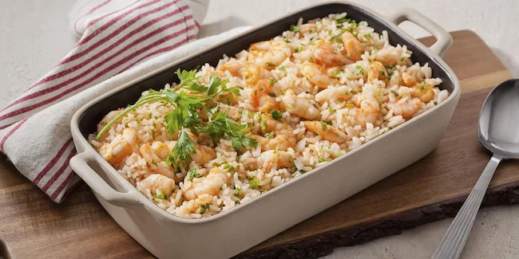

RECEITA DE BOBO DE CAMARÃO

ingredientes
1 quilo de mandioca descascada e picada
2 tabletes de MAGGI® Caldo Legumes
meia xícara (chá) de leite de coco
2 colheres (sopa) de azeite
1 cebola pequena picada
1 pimentão verde picado
1 dente de alho amassado
500g de camarões limpos
1 colher (sopa) de coentro picado
meia lata de purê de tomate
1 colher (sopa) de azeite-de-dendê
modo de preparo
1. Em uma panela grande, coloque 1 litro de água, a mandioca, o MAGGI Caldo e o leite de coco.
2. Leve ao fogo e cozinhe até a mandioca ficar macia.
3. Retire do fogo e espere esfriar um pouco.
4. Em um liquidificador, bata a mandioca com parte do caldo de cozimento, de modo a obter um creme não muito espesso. Se necessário, coloque mais caldo. Reserve.
5. Em uma panela, aqueça o azeite e refogue a cebola e o alho.
6. Adicione o pimentão verde e os camarões e cozinhe até que os camarões fiquem rosados.
7. Junte o purê de tomate, a mandioca reservada e aqueça.
8. Acrescente o coentro e o azeite de dendê, misturando bem. Sirva a seguir.